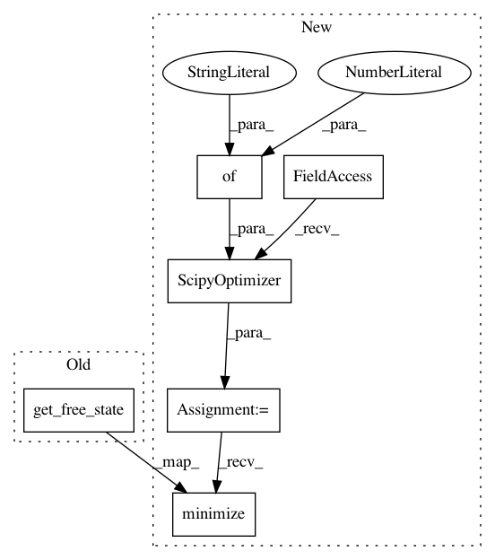

d955dd84d277855bb734fa205bb5f176e888eea7,testing/test_priors.py,PriorModeTests,testLaplaceMode,#PriorModeTests#,62
Before Change
self.m.x.prior = gpflow.priors.Laplace(3, 10)
self.m.optimize(disp=0)
xmax = self.m.get_free_state()
self.assertTrue(np.allclose(xmax, 3))
def testLogNormalMode(self):
with self.test_context():
After Change
self.m.x.prior = gpflow.priors.Laplace(3., 10.)
self.m.compile()
opt = gpflow.train.ScipyOptimizer(options={"disp": 0})
opt.minimize(self.m)
xmax = self.m.read_trainables()
self.assertTrue(np.allclose(xmax, 3))
def testLogNormalMode(self):
In pattern: SUPERPATTERN
Frequency: 4
Non-data size: 6
Instances
Project Name: GPflow/GPflow
Commit Name: d955dd84d277855bb734fa205bb5f176e888eea7
Time: 2017-10-01
Author: art.art.v@gmail.com
File Name: testing/test_priors.py
Class Name: PriorModeTests
Method Name: testLaplaceMode
Project Name: GPflow/GPflow
Commit Name: d955dd84d277855bb734fa205bb5f176e888eea7
Time: 2017-10-01
Author: art.art.v@gmail.com
File Name: testing/test_priors.py
Class Name: PriorModeTests
Method Name: testBetaMode
Project Name: GPflow/GPflow
Commit Name: d955dd84d277855bb734fa205bb5f176e888eea7
Time: 2017-10-01
Author: art.art.v@gmail.com
File Name: testing/test_priors.py
Class Name: PriorModeTests
Method Name: testGaussianMode
Project Name: GPflow/GPflow
Commit Name: d955dd84d277855bb734fa205bb5f176e888eea7
Time: 2017-10-01
Author: art.art.v@gmail.com
File Name: testing/test_priors.py
Class Name: PriorModeTests
Method Name: testGaussianModeMatrix